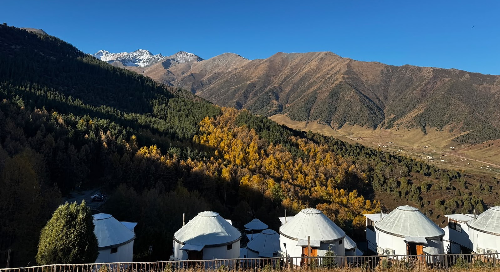
Chunkurchak
山谷豪華住宿和騎馬體驗。群山環繞，視野開闊，在自然裡放慢腳步，迎接旅程第一夜。
這個行程專為喜愛慢步調、放鬆、親近大自然與遊牧文化的旅人所設計，帶你深入探索吉爾吉斯最純粹、最動人的山谷與湖泊。不只走訪經典必去景點，更加入 BekRuby 獨家安排，讓旅程多一份溫度與深度。
我們採精緻小團制，每年開團數量有限，重視旅遊品質與體驗深度，確保每位旅人都能被好好照顧。
特別適合親子家庭或長輩同行，每日車程安排適中，保留充足時間讓大家欣賞山水景色、拍攝晨昏光影，或單純放慢腳步，在自然中好好放空與休息。

山谷豪華住宿和騎馬體驗。群山環繞，視野開闊，在自然裡放慢腳步，迎接旅程第一夜。
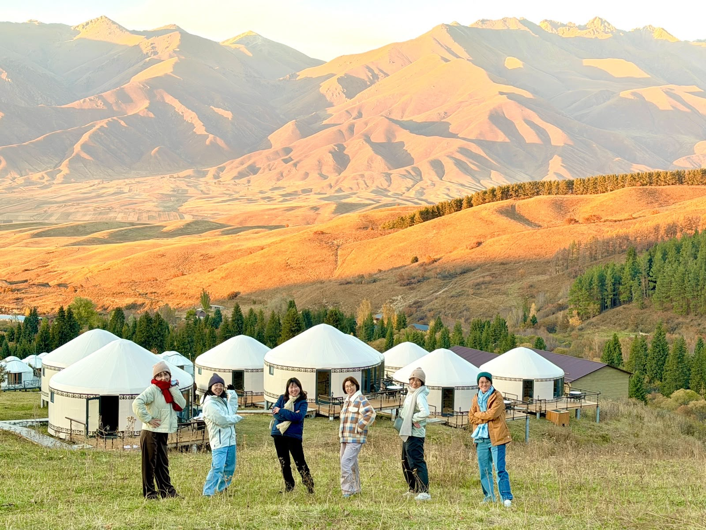
秋天的 Chon Kemin，白樺與草甸染成金黃，感受吉爾吉斯鄉村最真實的日常節奏。
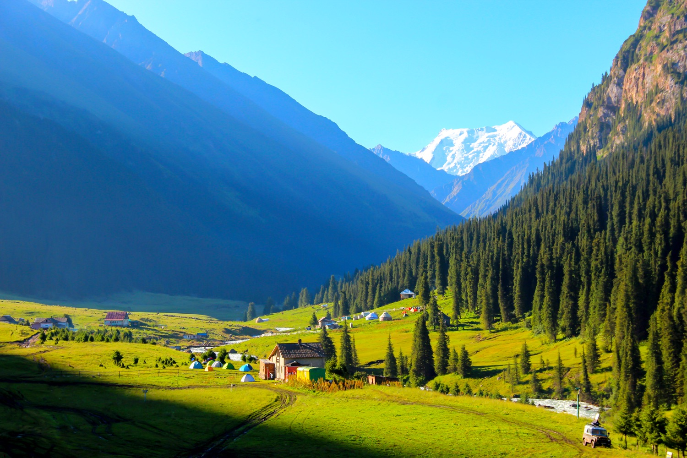
搭越野車深入天山谷地，天然溫泉從地底湧出，是整趟旅程最讓人放鬆的時刻。
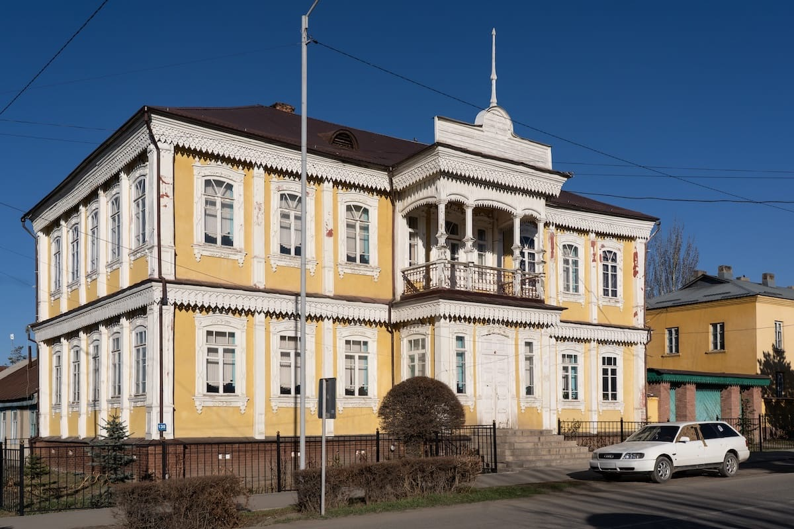
貝殼與嚕比長期生活的城市。在冷杉森林健行野餐，用在地節奏感受山城的溫度。
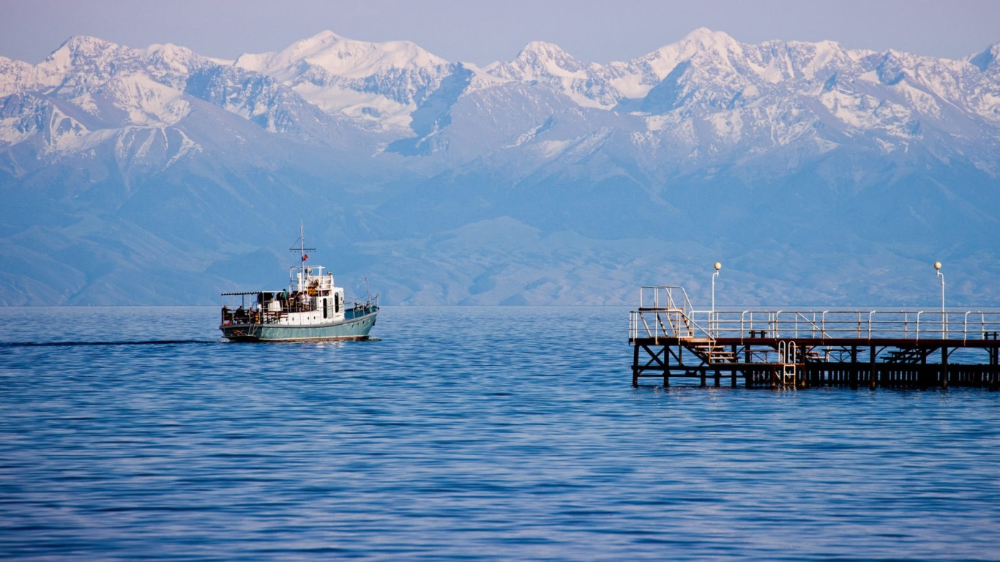
草原、紅岩峽谷、湖畔森林、雪山草原依序展開，吉爾吉斯最代表性的風景一次收齊。
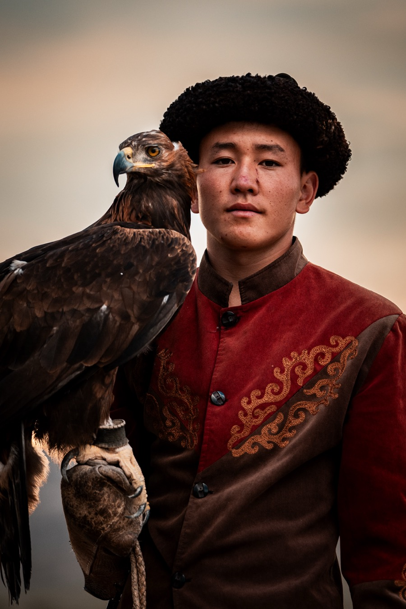
獵鷹文化體驗，以及貝殼媽媽的手藝與傳統舞蹈教學。
我們會依照季節、天氣與自然狀況進行彈性調整，確保每一趟旅程，都在最適合的時間，看見最美的風景、體驗最深刻的活動。
報名前請詳細閱讀旅行 QA。 前往旅行 QA →
喜愛慢步調、放鬆、親近大自然與遊牧文化的旅人。特別適合親子家庭或長輩同行，每日車程安排適中。
每年開團數量有限，重視旅遊品質與體驗深度，確保每位旅人都能被好好照顧。
全年皆可。行程多安排於中低海拔地區，四季各有風景，並依季節、天氣與自然狀況彈性調整。
9/23（三）– 9/30（三）
10/7（三）– 10/14（三）
2 人以上即可成行，全年皆可出發、時間彈性。行程可依季節、體力、興趣客製調整，適合家庭、朋友、小團深度旅行。
Email 我們：bekruby.kg@gmail.com，告知想參加的日期，mogi 小編將回覆訂金資訊與報名表格。
本行程以伊塞克湖為主，不會前往頌湖（Song-Kul）；以下比較僅供參考，幫助你選擇適合自己的行程。
雪山開始融雪，草原漸綠，山谷中盛開野花與罌粟花海（五月中）。白天涼爽，早晚仍偏冷，建議攜帶保暖衣物。適合輕鬆健行、賞花、拍攝晨曦與夕陽。
山谷與湖泊最為翠綠，伊塞克湖氣候溫暖，遊牧人家搬到高山放牧。白天溫暖舒適，夜晚微涼。適合騎馬、遠足、湖邊放鬆、參與遊牧文化體驗。
高山草原染上金黃與橙色，清晨和傍晚光影迷人，湖水映照秋色。涼爽乾燥，遊客相對較少，是拍照和慢遊的最佳時節。
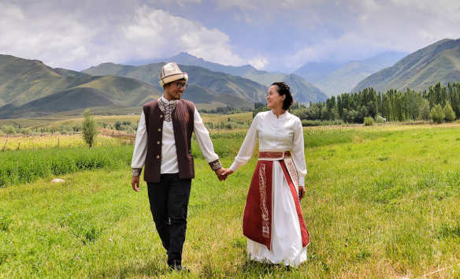
旅行，不只是抵達一個新地方，而是讓一段旅程，慢慢走進你的生命。對我們來說，吉爾吉斯不是旅遊目的地，而是我們的故鄉、我們的日常、我們的故事開始的地方。
我們來自台灣與吉爾吉斯的家庭，因為熱愛這片土地，選擇用陪伴、用記錄、用真心，把這裡的風、山谷、文化與人情分享給你。在這趟旅程裡，你會走進我們從小熟悉的村落、拜訪我們一路信任的朋友，吃到家人親手準備、承載記憶的味道。
我們相信旅行不該只是「打卡」與「收集景點」，而是一種看見生命、看見自己的方式。慢一點、深一點、真實一點——這就是貝殼嚕比的生活風格旅行。
期待在雪山、草原、湖畔或森林裡，與你相遇。歡迎你來吉爾吉斯。
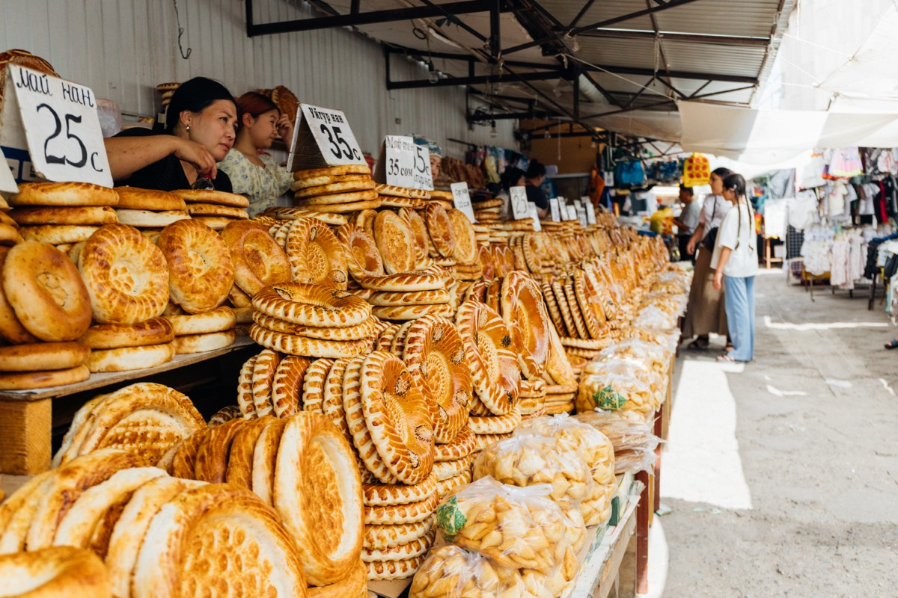
Bishkek → Osh Bazaar → Chunkurchak
從首都日常出發，走進高山山谷，在遼闊草原健行散步，正式開啟中亞之旅。
旅程從首都 Bishkek 開始。早上先走進熱鬧的 Osh Bazaar，從堆滿攤位的香料、乾果、新鮮蔬果到各式布料與日常用品，在熙來攘往的人群之間，感受最真實的吉爾吉斯城市生活。
中午前往一間傳統吉爾吉斯風格的餐廳享用午餐。以傳統吉爾吉斯建築與遊牧文化為設計靈感，在充滿民族特色的空間裡品嚐道地料理，也從飲食開始認識這片土地。
午後離開城市，驅車約一小時前往 Chunkurchak 山谷。抵達後換上馬匹，以約 2 小時的騎馬體驗深入山谷。秋天的 Chunkurchak 有著與夏季完全不同的色彩，山坡與草地逐漸染上金黃與褐色，沿著山徑慢慢前行，在開闊的山谷與清涼空氣中，正式把城市的節奏留在身後。
傍晚入住 Chunkurchak 山谷裡的山中度假村。被群山環繞的環境安靜而舒服，在山裡享用晚餐、好好休息，度過旅程溫暖而悠閒的第一個夜晚。
Chunkurchak → Burana Tower → Chon Kemin
早餐後離開 Chunkurchak，今天一路向東，逐漸離開城市與主要公路，走進吉爾吉斯的山谷與鄉村。
途中停留 Burana Tower，這座矗立在草原上的古塔，曾是絲綢之路古城 Balasagun 的一部分。登上古塔眺望四周，可以看見遼闊平原與遠方天山山脈，也從這座千年遺跡，慢慢認識中亞曾經繁盛的絲路文明。
午後抵達 Chon Kemin 山谷。這裡沒有太多刻意安排的「景點」，真正迷人的是山谷裡緩慢而真實的生活。沿著村落與草原散步，看遠方雪山延伸在地平線上；坐下來喝杯茶，看牛羊從身旁經過，感受寧靜山谷。
今晚入住山谷裡的家庭民宿，三餐由民宿主人親自準備，許多食材來自自家或附近農家。比起趕著前往下一個景點，今天更像是把時間留給 Chon Kemin——慢慢走、慢慢看，也好好感受吉爾吉斯鄉村生活最自然的一面。
Chon Kemin → Bokonbaevo
今天從山裡開始。早餐後在 Chon Kemin 山谷晨間健行，慢慢走過山谷裡的草甸與森林，呼吸清新的山間空氣，在出發前好好欣賞這片山景。
中午在 Chon Kemin 的家庭民宿享用家常午餐，餐後驅車前往伊塞克湖南岸的 Bokonbaevo。沿途景色從北部的山谷與草原，慢慢轉換成伊塞克湖一帶更加遼闊的山湖風景；途中每隔兩至三小時會安排停車休息，讓移動保持舒服的節奏。
下午與當地獵鷹人見面，觀賞獵鷹表演。在獵人的介紹與示範下，近距離認識這項流傳已久的遊牧傳統。對獵人而言，金雕不只是狩獵的工具，更是需要長時間相處、訓練並建立默契的夥伴，也是一項代代傳承的生活技藝。
晚餐在當地民宿享用家常料理，之後入住 Bokonbaevo 的現代氈房住宿，在伊塞克湖南岸好好休息，感受不同於城市的鄉村生活。
小提醒
途中每隔兩至三小時會安排停車休息，讓長途移動保持舒服的節奏。
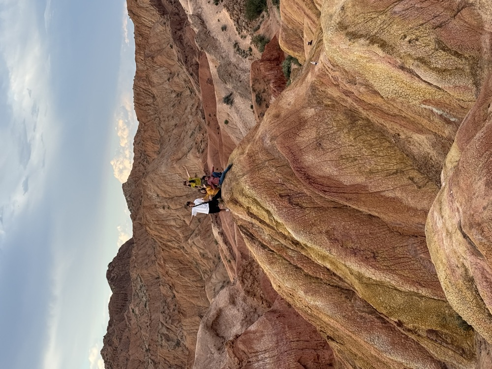
Bokonbaevo → Skazka Canyon → Barskoon → Jeti-Oguz → Karakol
今天沿著伊塞克湖南岸一路向東前進，是整趟旅程中地貌變化最豐富的一天。
早上首先來到 Skazka Canyon 童話峽谷，橙紅、土黃與淺褐色的岩層經過長年風雨侵蝕，形成像城堡、山脊與奇幻生物般的特殊地貌。沿著峽谷步行探索，登上高處還能遠眺湛藍的伊塞克湖，荒漠般的紅色岩層與湖水形成非常特別的對比。
接著前往 Barskoon 山谷，景色也從乾燥的彩色峽谷轉變成森林與高山溪流。沿著松林步道健行約 1–2 小時前往 Barskoon Waterfall，可依當天體力選擇走到第一層瀑布，或繼續向上挑戰第二層。一路伴著森林、溪流與山谷景色，是今天最舒服的一段健行。
下午繼續前往 Jeti-Oguz 紅岩峽谷，停留欣賞著名的「七頭公牛岩」，近距離感受巨大紅色岩壁的特殊地貌，也聽聽流傳在當地關於這片山谷的故事與傳說。
傍晚抵達 Karakol。晚餐安排在當地餐廳，品嚐精緻的中亞與吉爾吉斯料理。從早晨的彩色峽谷、午後的森林瀑布，到傍晚的紅岩山谷，一天之內走過截然不同的自然景觀，最後在 Karakol 好好吃頓晚餐，為充實的一天收尾。
小提醒
瀑布健行可依當天體力選擇走到第一層瀑布，或繼續向上挑戰第二層。
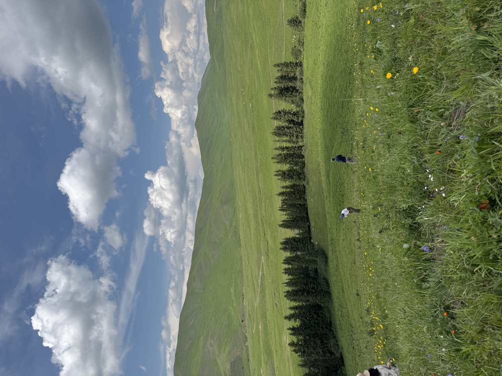
Karakol City → Karakol Gorge
在多元文化的城市、冷杉森林與山谷野餐之間，感受 Karakol 最真實的一天。
Karakol 是吉爾吉斯東部最重要的城市，也是多民族文化交融最明顯的地方。上午走訪兩處特色建築：建於 1895 年的 Holy Trinity 東正教木造教堂，見證了俄羅斯移民在此落地生根的歷史；東干清真寺（Dungan Mosque）由中亞東干族建造，整座建築不用一根釘子，造型融合中式與伊斯蘭風格，在世界上都屬罕見。
逛完紀念品小店後，午餐吃東干族特色小吃——涼粉（Ashulanfu）酸香微辣，馬鈴薯餅（Pirozhki）外酥內軟，都是在地人日常的味道。吃飽前往市集逛逛，採買大家野餐想吃的東西後前往 Karakol Gorge 山谷健行，是貝殼嚕比影片裡的秘境。戶外野餐是吉爾吉斯人最喜歡的放鬆方式，今天我們也一起。
小提醒
原訂安排的 Aksu 秋日健行步道，因秋季沿途部分路段生長較多帶刺植物，步行體驗較不舒適，因此將健行路線調整為 Karakol Gorge。Karakol Gorge 秋季景色同樣非常漂亮，山谷開闊，沿途有高山森林、溪流與天山山脈景觀，路線舒適、視野遼闊。
Karakol → Altyn-Arashan
搭乘越野車前往天山秘境，在雪峰環繞的山谷中，讓身體與心都徹底放鬆。
早餐後出發，從 Karakol 搭乘 4x4 越野車（四人以上改蘇聯軍卡）前往 Altyn-Arashan。30 公里的路程開起來約兩小時，路況顛簸，但沿途的山谷風景讓人捨不得閉眼。
Altyn-Arashan 意思是「黃金溫泉」，海拔約 2,500 公尺，木屋散落在草甸與雪峰之間。抵達後換上泳衣泡進天然溫泉，熱水從地底湧出，一邊泡湯一邊看雪山——這是許多旅客事後說整趟旅程最難忘的時刻之一。三餐由民宿提供，夜晚星空清晰無比。
小提醒
越野路段非常顛簸；四人以上會改搭蘇聯軍卡。記得帶泳衣泡溫泉。
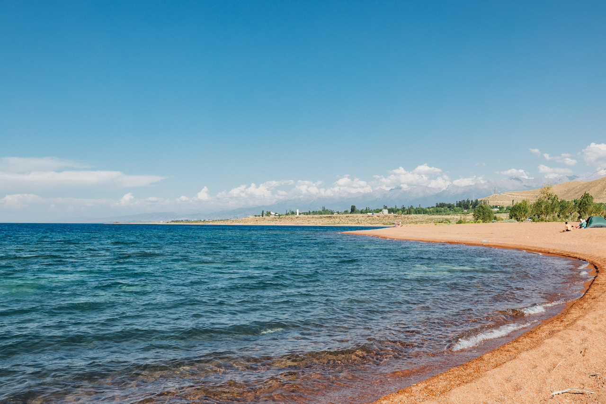
Altyn-Arashan → Karakol → Cholpon-Ata
早晨在 Altyn-Arashan 山谷醒來，今天可以選擇以健行的方式告別這片高山秘境。沿著山谷步行下山約 2.5 小時，一路伴著雪山、森林與湍急溪流，沿途景色非常漂亮；抵達半山腰後，再搭乘越野車繼續下山，返回山腳村落。
中午前往 Karakol 近郊享用當地著名的鱒魚料理，為高山行程好好補充體力。餐後沿著伊塞克湖北岸一路向西，車程約三小時，抵達北岸最具度假氣息的小鎮 Cholpon-Ata。
傍晚到湖畔散步，看著遼闊的伊塞克湖與遠方山脈，在旅程接近尾聲時，把步調慢下來。晚餐安排在阿拉伯餐廳，餐後還可以到隔壁的咖啡館吃甜點、冰淇淋。從高山健行回到湖畔小鎮，今晚不趕行程，好好享受伊塞克湖北岸悠閒的度假氛圍。
小提醒
健行下山為自由選擇，也可以全程搭乘越野車。
Cholpon-Ata → Bishkek
最後一天。今天的重頭戲是早上搭乘私人遊艇出湖——在開闊的湖面上慢慢前行，北岸的雪山與湖水交織成一幅橫向的壯麗風景，可以拍照、曬太陽，或就坐在船上放空。
靠岸後參觀 Cholpon-Ata 戶外岩畫博物館，從 4000 年前的青銅時代至遊牧時期的岩刻保存在此。回程途中停靠加油站喝杯咖啡、休息一下，讓身體慢慢從山野節奏過渡回城市。晚上回到 Bishkek，在餐廳享用晚餐。
在旅途中，你可能會品嚐到以下經典料理：
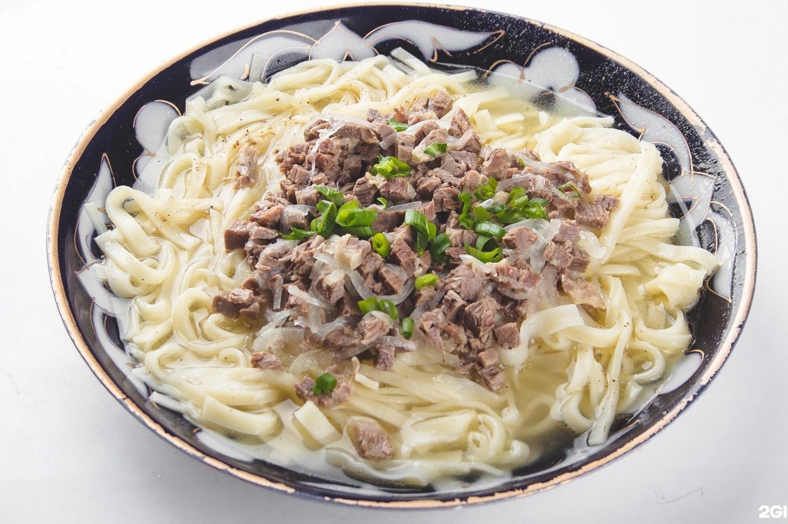
手切麵佐清燉肉。最具代表性的吉爾吉斯料理，象徵節慶與款待。

炒羊肉／牛肉，搭配馬鈴薯與洋蔥，是遊牧人的家常菜。
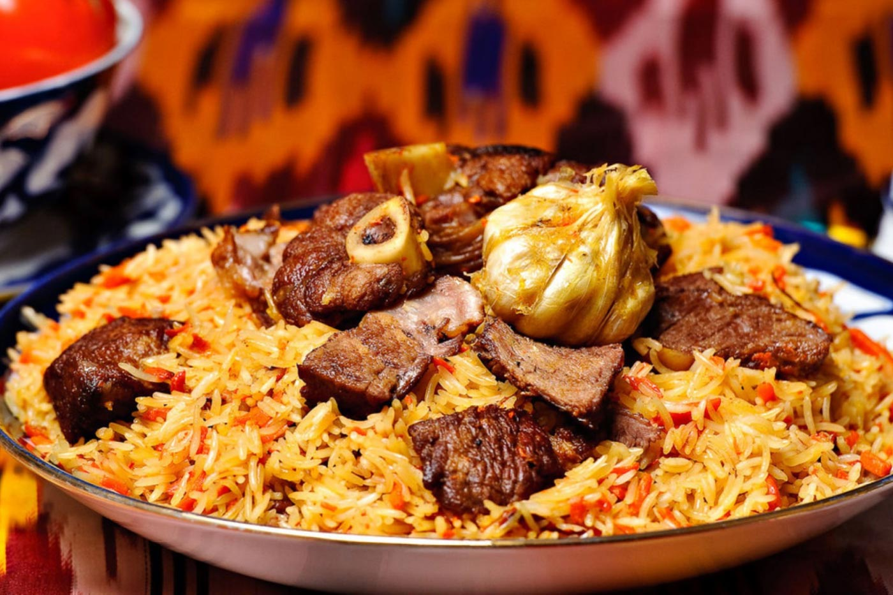
用胡蘿蔔、肉、米飯燉煮而成，香氣濃郁。
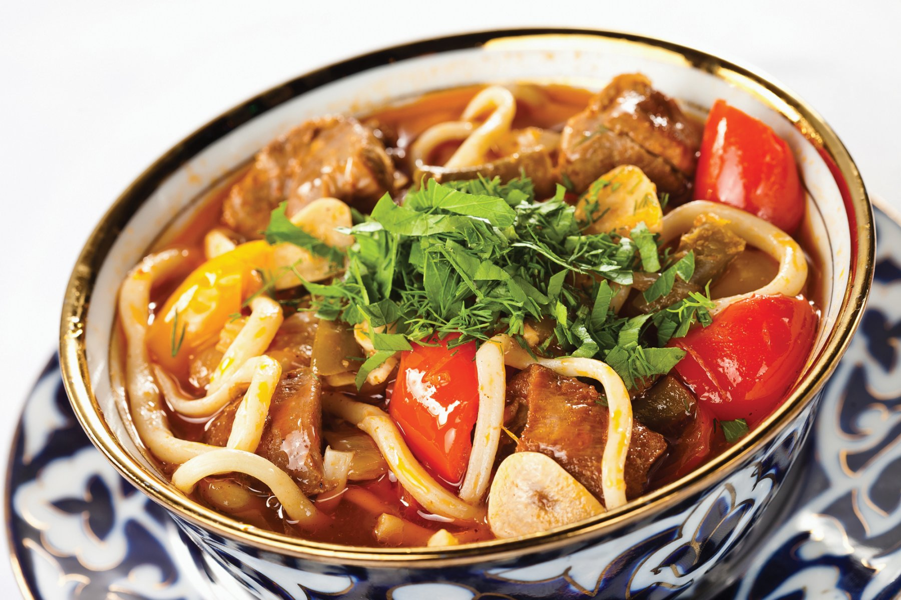
手工拉麵加入蔬菜與牛肉，是中亞常見的麵食。
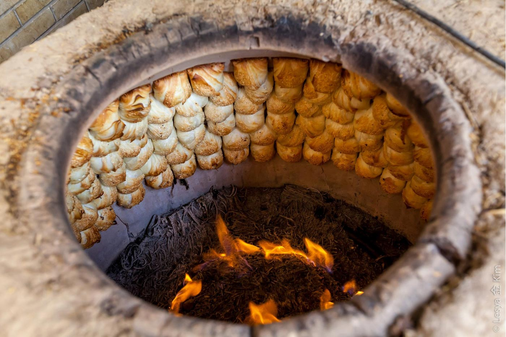
以傳統土窯烘烤，外酥內多汁。
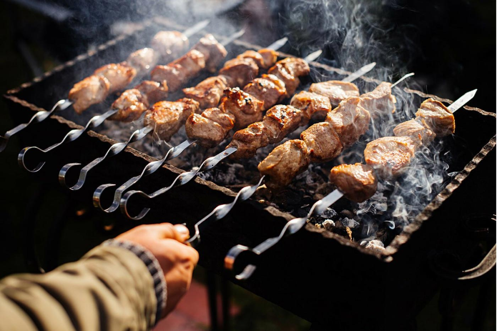
露天炭烤，是旅途中最常見的香味。